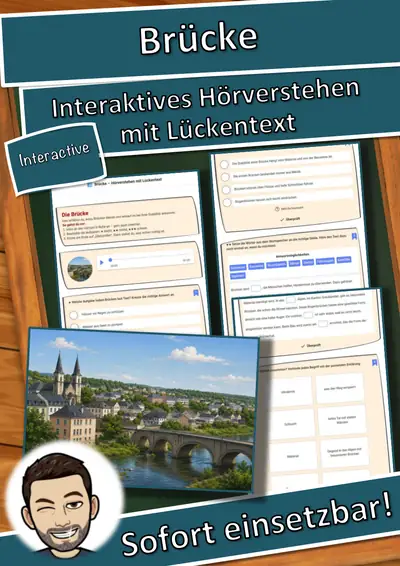
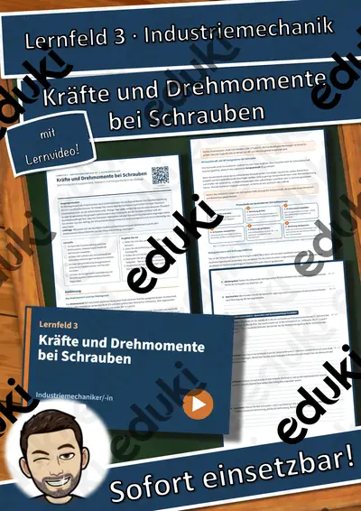
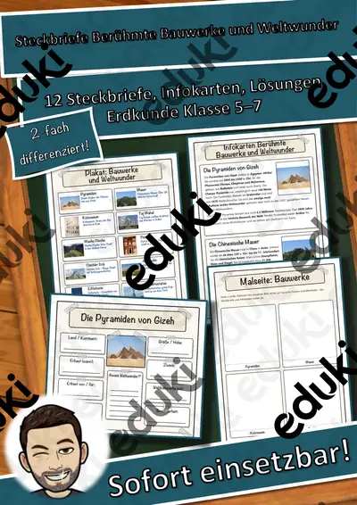
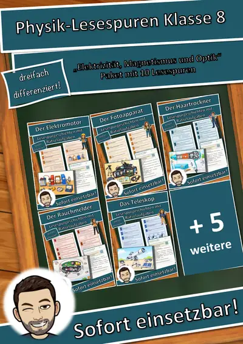

Lesespur: Die Hängebrücke – Lesespurgeschichte mit Rätseln (Klasse 8)
Mit dieser differenzierten Lesespurgeschichte erarbeiten die Lernenden selbstständig und motivierend, wie eine Hängebrücke aufgebaut ist und welchen Weg die Kräfte nehmen – von der Fahrbahn über Hänger, Tragseil, Pylon und Fundament bis zum Ankerblock, Widerlager und Pfeiler. Bauingenieurin Frau Steg führt Mia und Tom Schritt für Schritt durch das Bauwerk.
So funktioniert die Lesespur: Die Lernenden lesen einen Abschnitt, entnehmen dem Hinweis ein Bauteil der Brücke, suchen es auf dem farbigen Brücken-Plan (einer anschaulichen Übersichts-Illustration im Schnitt) und lesen dort weiter. An jeder richtigen Station sammeln sie einen Buchstaben. Vier Sackgassen (Boot, Fisch, Möwe, Sonne) dienen der Selbstkontrolle und machen deutlich, dass diese Dinge zwar rund um die Brücke vorkommen, aber nicht zum Bauwerk gehören. Am Ende ergeben die gesammelten Buchstaben ein geheimes Lösungswort rund um das Thema.
Inhaltlich verbindet das Material zentrale Themen aus Physik und Technik: Kräfte an Bauwerken, den Unterschied von Zug- und Druckkräften, den Weg der Last von der Fahrbahn über Seile und Türme bis ins Fundament sowie das Zusammenwirken der Bauteile. Ein anschauliches, alltagsnahes Thema rund um Statik und große Bauwerke.
Das ist enthalten:
- Lesespurgeschichte in drei Niveaus (leicht, mittel, schwer) – ideal zur Differenzierung
- farbiger Brücken-Plan mit allen Bauteilen im Schnitt
- vier eingebettete Aufträge: Begriffe verbinden, Quiz, Rechenaufgabe, Steckbrief
- Hörverstehen mit QR-Code zum Hörtext (Teil A Ankreuzen, Teil B frei schreiben)
- Rätselseite (Wörter-Suchsel und Wissensquiz)
- Ausmalbild
- ausführliches Lösungsblatt mit Fundorten
- das komplette Material zusätzlich als drucksparende Schwarz-Weiß-Vorlage
Geförderte Kompetenzen: sinnentnehmendes und selektives Lesen, Anwenden von Lesestrategien, konzentriertes Zuhören sowie das physikalisch-technische Verständnis von Kräften an Bauwerken.
Einsatz: Übungsphasen, Wochenplan, Stationenlernen, Vertretungsstunden, Freiarbeit und Nachhilfe. Umfang: 24 Seiten.
Ähnliche Materialien

Kräfte – Prüfungstraining Physik (Klasse 8)

Lesespur: Wofür lohnt es sich zu leben?: Sinnsuche im Jugendalter – Lesespurgeschichte mit Rätseln (Klasse 8)

Brücke – Hörverstehen mit Lückentext (interaktiv)

Brücke Lückentext mit Wortspeicher Hörverstehen und Suchsel

LF 3 Industriemechaniker/-in: Kräfte und Drehmomente bei Schrauben – Übungen, Lösungen + Lernvideo

Lesespur: Illustration: wie Bilder ins Buch kommen – Lesespurgeschichte mit Rätseln (Klasse 6)

Steckbriefe Berühmte Bauwerke und Weltwunder – Materialpaket (12 Bauwerke, differenziert, mit Lösungen)
